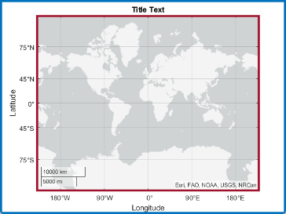

geoaxes
Create geographic axes
Description
A geographic axes displays data with latitude and longitude coordinates on a map. The map is live, which means that you can view nearby geographic regions by panning and view regions in more detail by zooming.
Create Geographic Axes
geoaxes creates a default geographic axes in the current
figure. Typically, you do not need to create geographic axes before plotting
because geographic plotting functions automatically create geographic axes when
they do not exist.
geoaxes( specifies
options for the geographic axes using one or more name-value arguments. For
example, Name=Value)FontSize=14 sets the font size for the geographic
axes to 14 points. For a list of properties, see GeographicAxes Properties.
geoaxes(
creates the geographic axes in the object specified by
parent,___)parent, instead of in the current figure, in addition
to any combination of inputs from the previous syntaxes.
gx = geoaxes(___)GeographicAxes object. Use gx
to query and modify properties of the GeographicAxes object
after creation. For a list of properties, see GeographicAxes Properties
Examples
Create a map with an inset map by positioning two GeographicAxes objects in a figure.
Create two GeographicAxes objects. Use the default position for the first GeographicAxes object. Specify the position of the second GeographicAxes object so that it has a lower-left corner at the point (0.65, 0.65) with a width of 0.245 and height of 0.265. By default, geoaxes normalizes the values to the figure. Return the GeographicAxes objects as gx1 and gx2.
figure gx1 = geoaxes; gx2 = geoaxes(Position=[0.65 0.65 0.245 0.265]);

Load a table containing cell tower data for California. The table rows represent individual cell towers. The table variables include data about the cell towers, such as the latitude and longitude coordinates.
load cellularTowers.matDisplay the locations of the cell towers in the first geographic axes. Provide geographic context for the data by changing the basemap.
geoscatter(gx1,cellularTowers,"Latitude","Longitude",Marker=".") geobasemap(gx1,"colorterrain")
Customize the appearance of the second geographic axes.
Specify limits that match the limits of the first geographic axes.
Change the basemap and remove the grid lines.
Hide the axis lines, the ticks, and the labels by setting the
AxisColorproperty.Add text.
[latlim,lonlim] = geolimits(gx1); geolimits(gx2,latlim,lonlim) geobasemap(gx2,"darkwater") grid(gx2,"off") gx2.AxisColor = "none"; text(gx2,38,-121,"*California")

Create two GeographicAxes objects and specify their positions. Return the GeographicAxes objects as gx1 and gx2.
figure gx1 = geoaxes(Position=[0.13 0.11 0.35 0.37]); gx2 = geoaxes(Position=[0.52 0.50 0.35 0.37]);

Make gx1 the current axes. This action makes the axes the target for subsequent graphics functions.
geoaxes(gx1)
Load a MAT file containing coordinates for the perimeter of the contiguous United States. The file contains two variables: the uslat variable specifies latitude coordinates in degrees, and the uslon variable specifies longitude coordinates in degrees.
load usapolygon.matDisplay the data in the current axes. Then, change the basemap of the current axes. Note that these changes apply to gx1.
geoplot(uslat,uslon)
geobasemap topographic
Create a figure with two tabs. Add a geographic axes to each tab by specifying the parent container for each axes.
figure tab1 = uitab(Title="Tab1"); gx1 = geoaxes(tab1); tab2 = uitab(Title="Tab2"); gx2 = geoaxes(tab2);
In the first tab, plot county locations for the northeast United States over a gray and white basemap. In the second tab, view the same region over a topographic basemap.
tbl = readtable("counties.xlsx"); geoscatter(gx1,tbl,"Latitude","Longitude") geobasemap(gx1,"grayland") [latlim,lonlim] = geolimits(gx1); geolimits(gx2,latlim,lonlim) geobasemap(gx2,"topographic")

Input Arguments
Name-Value Arguments
Specify optional pairs of arguments as
Name1=Value1,...,NameN=ValueN, where Name is
the argument name and Value is the corresponding value.
Name-value arguments must appear after other arguments, but the order of the
pairs does not matter.
Example: geoaxes(Position=[0.3 0.3 0.5 0.5]) specifies the
position of the geographic axes so that is has a lower-left corner at the point
(0.3, 0.3) with a width and height of 0.5. By default, geoaxes
normalizes the values to the figure.
Before R2021a, use commas to separate each name and value, and enclose
Name in quotes.
Example: geoaxes("Position",[0.3 0.3 0.5 0.5]) specifies the
position of the geographic axes so that is has a lower-left corner at the point
(0.3, 0.3) with a width and height of 0.5. By default, geoaxes
normalizes the values to the figure.
Note
Use name-value arguments to specify values for the properties of the
GeographicAxes objects created by this function. The
properties listed here are only a subset. For a complete list, see GeographicAxes Properties.
Map on which to plot data, specified as one of the values listed in the table. Six of the basemaps are tiled data sets created using Natural Earth. Five of the basemaps are high-zoom-level maps hosted by Esri®.
|
|
Map designed to provide geographic context while highlighting user data on a light background. Hosted by Esri. |
|
Map designed to provide geographic context while highlighting user data on a dark background. Hosted by Esri. |
|
|
General-purpose road map that emphasizes accurate, legible styling of roads and transit networks. Hosted by Esri. |
|
Full global basemap composed of high-resolution satellite imagery. Hosted by Esri. |
|
|
General-purpose map with styling to depict topographic features. Hosted by Esri. |
|
Map that combines satellite-derived land cover data, shaded relief, and ocean-bottom relief. The light, natural palette is suitable for thematic and reference maps. Created using Natural Earth. |
|
|
Shaded relief map blended with a land cover palette. Humid lowlands are green and arid lowlands are brown. Created using Natural Earth. |
|
Terrain map in shades of gray. Shaded relief emphasizes both high mountains and micro-terrain found in lowlands. Created using Natural Earth. |
|
|
Two-tone, land-ocean map with light green land areas and light blue water areas. Created using Natural Earth. |
|
Two-tone, land-ocean map with gray land areas and white water areas. Created using Natural Earth. |
|
|
Two-tone, land-ocean map with light gray land areas and dark gray water areas. This basemap is installed with MATLAB®. Created using Natural Earth. |
Blank background that plots your data with a latitude-longitude grid, ticks, and labels. |


All basemaps except 'darkwater' require Internet access. The
'darkwater' basemap is included with MATLAB.
If you do not have consistent access to the Internet, you can download the basemaps created using Natural Earth onto your local system by using the Add-On Explorer. The five high-zoom-level maps are not available for download. For more about downloading basemaps and changing the default basemap on your local system, see Access Basemaps for Geographic Axes and Charts.
The basemaps hosted by Esri update periodically. As a result, you might see differences in your visualizations over time.
Alignment of boundaries and region labels are a presentation of the feature provided by the data vendors and do not imply endorsement by MathWorks®.
Data Types: char | string
Size and location, excluding a margin for the labels, specified as a four-element
vector of the form [left bottom width height]. By default,
MATLAB measures the values in units normalized to the container. To change the
units, set the Units property.
The
leftandbottomelements define the distance from the lower-left corner of the container (typically a figure, panel, or tab) to the lower-left corner of the position boundary.The
widthandheightelements are the position boundary dimensions.
If you want to specify the position and account for the text around the axes, then set
the OuterPosition property instead. This figure shows the areas
defined by the OuterPosition values (blue) and the
Position values (red).

Note
Setting this property has no effect when the parent container is a
TiledChartLayout object.
Size and location, including the labels and a margin, specified as a four-element
vector of the form [left bottom width height]. By default,
MATLAB measures the values in units normalized to the container. To change the
units, set the Units property. The default value of [0 0 1
1] includes the whole interior of the container.
The
leftandbottomelements define the distance from the lower-left corner of the container (typically a figure, panel, or tab) to the lower-left corner of the outer position boundary.The
widthandheightelements are the outer position boundary dimensions.
This figure shows the areas defined by the OuterPosition values
(blue) and the Position values (red).
Note
Setting this property has no effect when the parent container is a
TiledChartLayout object.
Position units, specified as one of these values.
Units | Description |
|---|---|
"normalized" (default) | Normalized with respect to the container, which is typically the
figure or a panel. The lower-left corner of the container maps to
(0,0) and the upper-right corner maps to
(1,1). |
"inches" | Inches. |
"centimeters" | Centimeters. |
"characters" | Based on the default
|
"points" | Typography points. One point equals 1/72 of an inch. |
"pixels" | Pixels. On Windows® and Macintosh systems, the size of a pixel is 1/96th of an inch. This size is independent of your system resolution. On Linux® systems, the size of a pixel is determined by your system resolution. |
When specifying the units using a name-value argument during object creation, you must
set the Units property before specifying the properties that you
want to use these units, such as Position.
Output Arguments
Tips
Mapping Toolbox™ enables additional plotting capabilities:
Plot 2-D geographic data in any supported projection by using the
newmap(Mapping Toolbox) function and plotting functions such asgeoplot,geoscatter, andbubblechart.Plot 3-D geographic data using the
geoglobe(Mapping Toolbox) andgeoplot3(Mapping Toolbox) functions.Add custom basemaps using the
addCustomBasemap(Mapping Toolbox) function.Add a basemap picker to the axes toolbar by using the
addToolbarMapButton(Mapping Toolbox) function.
Some graphics functions reset axes properties when plotting. To plot additional data in a geographic axes, use the
hold oncommand before calls to plotting functions.Plotting data that requires Cartesian axes in a geographic axes is not supported.
When you plot on geographic axes, the
geoaxesfunction assumes that coordinates are referenced to the WGS84 coordinate reference system. If you plot using coordinates that are referenced to a different coordinate reference system, then the coordinates might appear misaligned.
Version History
Introduced in R2018b